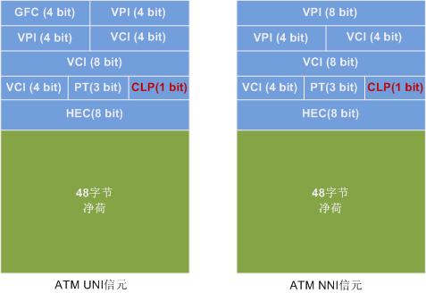

ATM信元头根据网络接口的不同分为UNI和NNI两种信元头类型。
图1 ATM信元头格式

- GFC：一般流量控制，长度是4比特，只用于UNI接口，进行流量控制或在共享媒体的网络中标识不同的接入访问。
- VPI：虚通道标识符，在UNI中长度是8比特，可标识256个VP；在NNI中长度是12比特，可标识4096个VP。
- VCI：虚通路标识符，长度是16比特，可标识65536个VC。
- CLP：信元丢弃优先等级（Cell Loss Priority），长度是1比特，用于拥塞控制。发生拥塞时优先丢弃CLP=1的信元。
- PTI：净荷类型标识（Payload Type Indicator），长度是3比特，用于标识净荷的类型。
- HEC：信头差错控制，长度是8比特，用于信元头中的差错控制和信元定界。可纠正１位错码，发现多位错码。在物理层进行HEC处理。
对于一些特定的VPI/VCI值已经保留作为特殊信元使用，下面对它们进行简单介绍。
- 空闲信元：VPI=0，VCI=0，PTI=0，CLP=1，用于速率适配。
- 未赋值信元：VPI=0，VCI=0，PTI=任意值，CLP=1。
- OAM信元：
- 对于VP，VCI=3，用于VP链路；VCI=4用于VP连接。
- 对于VC，PTI=4用于VC链路，PTI=5用于VC连接。
- 信令信元：它分为以下三种类型：
- 元信令信元：VPI为任意值，VCI=1。
- 一般广播信令信元：VPI为任意值，VCI=2。
- 点对点信令信元：VPI为任意值，VCI=5。
- 净荷类型PT（Payload Type）：该域长度是3比特。用于标识信息域，也就是净荷的类型。下面列出的是ITU-T I.361已定义的PT值及其含义。
- PT=000：用户数据信元，未经历拥塞，ATM层用户到ATM层用户指示AUU（ATM User to User）为0。
- PT=001：用户数据信元，未经历拥塞，AUU=1。
- PT=010：用户数据信元，经历拥塞，AUU=0。
- PT=011：用户数据信元，经历拥塞，AUU=1。
- PT=100：OAM F5段相关信元。
- PT=101：OAM F5端到端相关信元。
- PT=110：资源管理信元。
- PT=111：将来用。
由此可见，当信元用于承载用户数据时：
- PT第一位为0。
- 第二位标识信元是否经历拥塞，这一位可通过处于拥塞的网络节点设置。
- 第三位是AUU指示，其中，AUU=0表明对应的SAR-PDU是起始段或中间段，AUU=1表明为结束段。